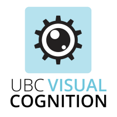

<!DOCTYPE html>
<html>
  <head>
    <link rel="icon" href="img/VCL_favicon.png">
    <title>Visual Search</title>

    <script src="jspsych-6.0.5/jspsych.js"></script>
    <script src="jspsych-6.0.5/plugins/jspsych-html-keyboard-response.js"></script>
    <script src="jspsych-6.0.5/plugins/jspsych-image-keyboard-response.js"></script>
    <script src="jspsych-6.0.5/plugins/jspsych-multiple-ensembles-grid.js"></script>
    <link href="jspsych-6.0.5/css/jspsych.css" rel="stylesheet" type="text/css"></link>

    <script src="scripts/subcondition_generator.js"></script> 

    <link rel="stylesheet" href="styles/styles.css">


  </head>
  <body>
  </body>
  <script>

    // INITIALIZE VARIABLES ================================================

    let timeline = [];

    // Extracts params from URL
    function getUrlVars() {
      var vars = {};
      var url = decodeURI(window.location.href);
      var parts = url.replace(/[?&]+([^=&]+)=([^&]*)/gi, function(m,key,value) {
          vars[key] = value;
      });
      return vars;
    }

    let params = getUrlVars();
    let color = params["color"];
    let is_short = params["short"];
    let num_repeats = params["repeat"]
    let subject_id = params["subjectID"];

    let set = get_subcondition_set(color);
    let subconditions = [];

    for (let i = 0; i < num_repeats; i++){
      subconditions = subconditions.concat(set);
    }


    function get_other(number) {
      if (rand == 1) {
          return 0;
      }  else {
          return 1;
      }
    };

    // ---------------------------------------------------------------------
    // WELCOME

    let welcome = {
      type: 'html-keyboard-response',
      stimulus: '<div align = "center">' + '</img> <br>' +
                'Welcome to the <b>Visual Search</b> Experiment.' + 
                '<br><br><p><font size = 15>Press any key to begin.<p></font>' +
                '</div>',
      data: {type: 'instruction'}
    };
    timeline.push(welcome);

    // ---------------------------------------------------------------------
    // INSTRUCTIONS
    let targetname1 = subconditions[0]["target_path"];
    var height = window.innerheight/4;
    var width = height/2;

    let instructions = {
    type: "html-keyboard-response",
    stimulus: "<div align = 'center'>" + 
              "<p>You will fixate on the cross displayed in the center of the screen before each trial." + 
              "<p>Keep your attention there and watch for a display of different colored squares to appear." + 
              "<p>Please press the Z if you see the target colored square, please press the M if you believe it was absent from the trial." +
              "<div style='height: 100px; display: block;'>"+
              `</img>" +
              "</div>" + "<div> <p>Press any key to continue.</div>" + 
              "</div>"          
    };
    //timeline.push(instructions);

    // ---------------------------------------------------------------------
    // READY

    let ready = {
      type: 'html-keyboard-response',
      stimulus: "<div align = 'center'> <font size = 20><p>Ready? We will now begin the experiment. <p>" + "<br><br><p><b>Press any key to begin.</b></p></font></div>",
      data: {type: 'instruction'}
    }
    timeline.push(ready);

    console.log("REACHED 92");


    // ---------------------------------------------------------------------
    // FIXATION

    let fixation = {
      type: 'html-keyboard-response',
      stimulus: '<div style="font-size:60px;">+</div>',
      choices: jsPsych.NO_KEYS,
      trial_duration: 1000,
      data: {type: 'fixation'}
    };

    // ---------------------------------------------------------------------
    // FEEDBACK

    var feedback = {
      type: 'html-keyboard-response',
      trial_duration: null,
      response_ends_trial: true,
      data: {type: 'feedback'},
      stimulus: function(){

        var last_trial = JSON.parse(jsPsych.data.getLastTrialData().json());
        var last_trial_correct = last_trial[0]["correct"];

        // For debugging purposes:
        if (last_trial_correct == -1){
          return '<p>' + 
                 '<font style="font-size:50px; color:blue">Exiting from experiment.<p></font>'
        }

        else if (last_trial_correct){
          return '<p><i class="fa fa-check-circle" style="font-size:50px; color:green; margin-right: 10px;"></i>' + 
                 '<font style="font-size:50px; color:green">Correct!<p></font>'
        }
        else{
          return '<p><i class="fa fa-close" style="font-size:50px; color:red; margin-right: 10px;"></i>' + 
                 '<font style="font-size:50px; color:red;"">Incorrect!<p></font>'
        }
      }
    };

    // ---------------------------------------------------------------------
    // STIMULI

    // Randomize order
    //let shuffled_subconditions = subconditions.sort( () => Math.random() - 0.5);

    // If want the shortened version, just slice out 5
    //if (is_short === "true"){
    //  shuffled_subconditions = shuffled_subconditions.slice(0, 6);
    //}

    console.log("REACHED 147");

    let count = 1;

    for (let subcondition of subconditions){

      let sizes = [subcondition["target_size"], subcondition["distractor_size"]];
      let paths = [subcondition["target_path"], subcondition["distractor_path"]].sort( () => Math.random() - 0.5 );
      let z = paths[0];
      let m = paths[1];

      instructions = {
          type: "html-keyboard-response",
          stimulus: "<div align = 'center'>" +
              "<p>You will fixate on the cross displayed in the center of the screen before each trial." +
              "<p>Keep your attention there and watch for a display of different colored squares to appear." +
              "<p>Please press the Z if you see more of the left colored square, please press the M if you more of the colour on the right." +
              "<div style='height: 100px; display: block;'>"+
              `</img>" + `</img>" +
          "</div>" + "<div> <p>Press any key to continue.</div>" +
              "</div>"
      };

      stimuli = {
        type: 'multiple-ensembles-grid',
        choices: null,
        trial_duration: 2000,
        distribution_sizes: sizes,
        stimuli: [subcondition["distractor_path"], subcondition["target_path"]],
        response_ends_trial: false,
      }

      mask = {
          type: 'multiple-ensembles-grid',
          choices: ['z', 'm'],
          trial_duration: null,
          distribution_sizes: [75,30],
          stimuli: ["stimuli/black.png", "stimuli/white.png"],
          response_ends_trial: true,
          on_start: function(trial) {
              trial.data = subcondition;
              trial.data.type = "test";
              trial.data.subject_id = subject_id;
              trial.data.trial = count;
              trial.data.ratio = subcondition["ratio"];
              trial.data.z = z;
              trial.data.m = m;
              trial.data.actual_ratio = sizes[0] / sizes[1];
              trial.data.count = count;
                  count++;
          },
          on_finish: function(data) {
               if (z == subcondition["target_path"]){
                  data.right_response = 'z';
                  data.correct = (data.key_press == jsPsych.pluginAPI.convertKeyCharacterToKeyCode('z'));
              }
              else {
                  data.right_response = 'm';
                  data.correct = (data.key_press == jsPsych.pluginAPI.convertKeyCharacterToKeyCode('m'));
              }
              console.log("RESPONSE: " + data.correct);
          }
      }


      timeline.push(instructions);
      timeline.push(fixation);
      timeline.push(stimuli);
      timeline.push(mask);
      timeline.push(feedback);
    }

    // The better way to do it, for some reason jsPsych.timelineVariable() not working

    // var procedure = {
    //     timeline: [
    //         fixation,
    //         {
    //           type: 'multiple-ensembles-grid',
    //           choices: ['z', 'm'],
    //           trial_duration: null,
    //           grid_size: [36, 36],
    //           distribution_sizes: function(){
    //             let size = jsPsych.timelineVariable('size')
    //             return [size, 1]
    //           },
    //           stimuli: function(){
    //             let distractor_path = jsPsych.timelineVariable('distractor');
    //             let target_path = jsPsych.timelineVariable('target');
    //             return [distractor_path, target_path];
    //           },
    //           response_ends_trial: true,
    //           data: {type: 'test'}
    //         }
    //     ],
    //     timeline_variables: subconditions
    // }
    // timeline.push(procedure);

    // ---------------------------------------------------------------------
    // INIT

    jsPsych.init({
      timeline: timeline,
      on_finish: function() {

        jsPsych.data.displayData();

        let trial_data = jsPsych.data.get()
                                .filter({type: 'test'})
                                .ignore('time_elapsed')
                                .ignore('internal_node_id')
                                .ignore('trial_type')
                                .ignore('trial_index')
                                .ignore('stimulus')
                                .ignore('target_path')
                                .ignore('distractor_path')
                                .ignore('type');

        let string = subject_id + "_visualSearch.csv";
        trial_data.localSave('csv', string);
      }
    });

  </script>
  </html>